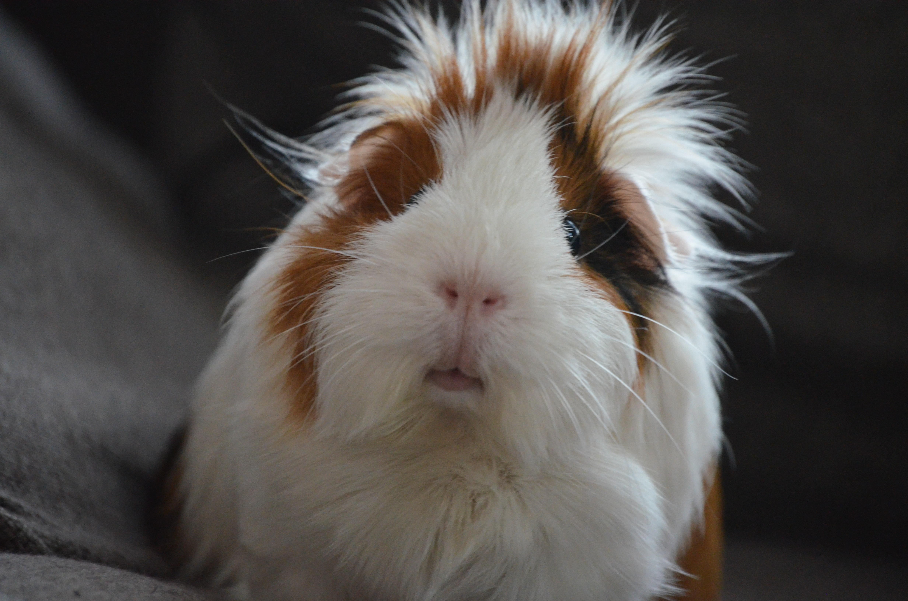
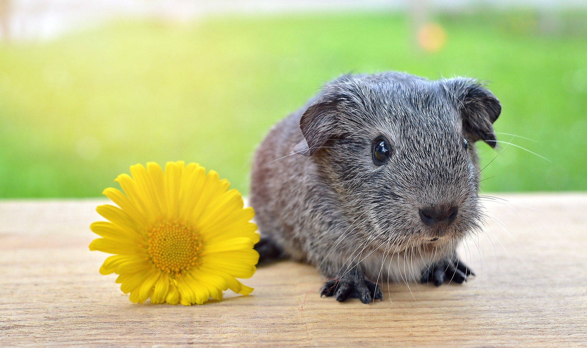
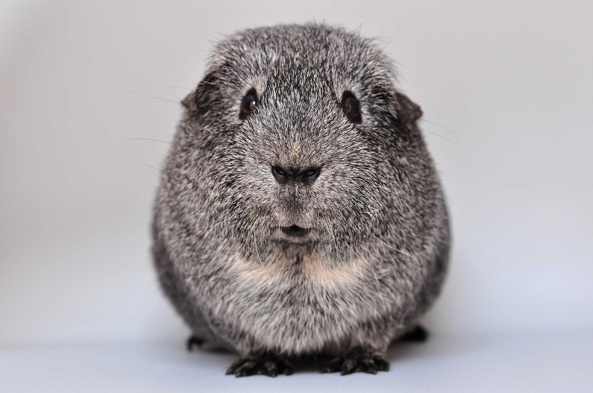

Featured Guinea Pigs

Boris

Petunia

Gnocchi

Chainsaw
Welcome to the website of the largest guinea pig rescue in New England. At our shelter in Newton, MA we house 400+ guinea pigs in need of a loving home. If you are interested in adopting one (or more!) of our residents please fill out an adoption form and one of our volunteers will reach out to you.
Boris
Petunia
Gnocchi
Chainsaw
Why can't the world be simpler, like it is for guinea pigs? They only have a few rules: Crying will get you attention. If it fits in your mouth, it's food. Scream if you don't get your share.
-Cynthia Lord